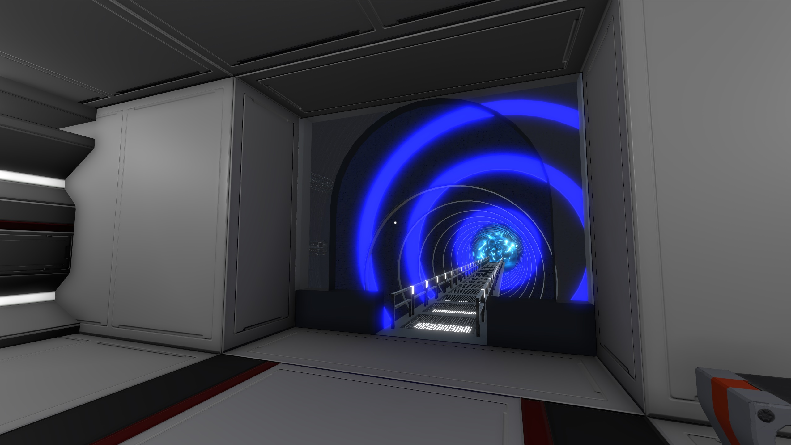

A First-Person Puzzle Adventure
Check Out This Project
After several years of ignoring global warming, the planet is now almost uninhabitable. Omar is a man who a genetic mutation allowed him to live to be 300 years old. Primarily he had decided to just observe humanity from afar, but seeing the Earth in this state he could no longer just watch, he had to do something to get the planet's state reversed.
He decides to join a military organization that has a plan to “save the Earth”: they will use a time machine to be able to go back and stop the heating before it's too late. But because the substance that served as fuel for the machine no longer exists, an interdimensional portal will be used in order to visit other Earths in search of this substance so that they can use the time machine.
Overall this game is a linear puzzle solver (player solves one puzzle to unlock the next one). Integrated in them are the use of items that can be found throughout the levels and stored in the inventory, but also through the player's own reasoning ability.
The use of the inventory and the items it contains is crucial to completing a challenge. Interaction with NPCs, although it can be helpful, may not be as necessary (eg NPC informs that item X is located in location Y, but player can see from experience that the item is located in a particular location without consulting the NPC).